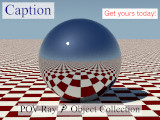
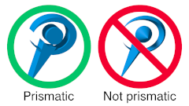
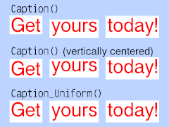

{kind=link}

 Caption is a library module from the Persistence of Vision Ray Tracer (POV-Ray) Object Collection that creates boxes with imprinted text. With an opaque or partially transparent box, this is useful for quickly annotating busy scenes where text might otherwise be difficult to read.
The italicized nnnnnn in some of the file names represents the 6-digit number that is in the name of the .zip file.
| Key Files | |
|---|---|
| File | Description |
caption.html |
The user manual (this document) |
caption.inc |
The Caption software |
caption.pov |
Scene description files demonstrating use of Caption |
caption_uniform.pov |
|
caption.jpg |
Sample output images |
caption_uniform.png |
|
caption_thumbnail.jpg |
|
caption_prism.png |
An illustration for the user manual |
| Administrative Files | |
| File | Description |
READMEnnnnnn.html |
Important information about using the POV-Ray Object Collection |
caption_description.txt |
A brief description of Caption |
caption_keywords.txt |
A list of keywords |
caption_prereqs.txt |
Prerequisites (empty file) |
caption.css |
Other administrative files |
cc-LGPL-a.png |
|
Versionnnnnnn.js |
|
Caption requires POV-Ray version 3.5 or later.
All file names in this module and all global and local identifiers defined in caption.inc comply fully with the Object Collection naming standards, as revised August 2008 and proposed August 2012. The reserved prefix for this module is “caption,” including any uppercase and lowercase variants. To avoid conflicts, do not introduce into your scene description file any identifiers with this name, or any identifiers that start with this prefix plus an underscore.
The standard include file math.inc is used by caption.inc. The identifier View_POV_Include_Stack from the standard include file debug.inc is referenced by caption.inc, although debug.inc itself is not used.
Include this file once prior to using any of the macros:
#include "caption.inc"
Including the file more than once is harmless, though unnecessary.
Note that as of POV-Ray version 3.7, objects positioned with screen.inc do not contribute radiosity to a scene, but in earlier versions of POV-Ray, they do.
This argument controls the “glow” of a caption object, that is, the portion of the object’s colors that is independent of the environmental lighting. The effect is slightly different depending on the version of POV-Ray.
c_Emission argument are negative (or if the argument is a negative float), then the ambient and diffuse finishes are turned off for the object, and the emission finish is set to 1.0.
c_Emission argument, and the ambient and diffuse finishes default.
c_Emission argument are negative (or if the argument is a negative float), then the diffuse finish is turned off for the object, and the ambient finish is set to 1.0.
c_Emission argument, and the diffuse finish defaults.
 Several of the macros take an object as an argument to use as a pattern. The object is projected along the z direction such that it is centered on the x-y plane, the object’s “center” being measured from its bounding box. The easiest way to get predictable results is for the object to be prismatic in form; that is, its cross section in x-y should not vary for any value of z.
Returns a box with text printed on its −z face. The −z face will lie in the x-y plane.
| Formal Parameter | Type | Description |
|---|---|---|
s_Text |
string | The text string to be imprinted. |
s_Font |
string | The font to be used. A null string defaults to Cyrvetica (cyrvetic.ttf). |
v_Padding |
vector | The x and y components are the padding to apply around the text, and z is the depth of the box. If there is a t component, then it will be used instead of y to pad the top of the text. |
c_Text |
color | The color of the text. |
c_Background |
color | The color of the negative space. |
c_Emission |
color | See the description of the c_Emission argument. |
Returns a box with a cross section of an object imprinted on its −z face. The −z face will lie in the x-y plane.
| Formal Parameter | Type | Description |
|---|---|---|
Object |
object | The object to be imprinted. |
v_Padding |
vector | The x and y components are the padding to apply around the object, and z is the depth of the box. If there is a t component, then it will be used instead of y to pad the top of the object. The padding is measured around the object’s bounding box. |
c_Object |
color | The color of the object to be imprinted. |
c_Background |
color | The color of the negative space. |
c_Emission |
color | See the description of the c_Emission argument. |
Returns a box with a cross section of an object imprinted on its −z face. To facilitate visual consistency across different calls to this macro, vertical padding will be applied around a font’s metrics, rather than the object itself. The −z face will lie in the x-y plane.
Font metrics are measured around the string Caption_s_Font_exemplar.
| Formal Parameter | Type | Description |
|---|---|---|
Object |
object | The object to be imprinted. |
s_Font |
string | A font to be used as a template for the metrics. A null string defaults to Cyrvetica (cyrvetic.ttf). |
v_Padding |
vector | The x component is the horizontal padding around the object’s bounding box; y is the vertical padding, measured around the pre-determined character string; and z is the depth of the box. If there is a t component, then it will be used instead of y to pad the top of the object. |
c_Object |
color | The color of the object to be imprinted. |
c_Background |
color | The color of the negative space. |
c_Emission |
color | See the description of the c_Emission argument. |
Returns an object texture. The object will be translated and scaled in the z direction such that 0.5 POV unit of the object lies on the each side of x-y plane. No transformations will be made in x or y. Note that the transformations are applied only to the texture, and will not affect the object itself.
| Formal Parameter | Type | Description |
|---|---|---|
Object |
object | The object to be used for the texture. |
c_Object |
color | The color of the object space. |
c_Background |
color | The color of the negative space. |
c_Emission |
color | See the description of the c_Emission argument. |
Returns a box with text printed on its −z face.

To facilitate visual consistency across different calls to this macro, vertical padding will be applied around the font’s metrics, rather than the text object itself. The illustration shows how Caption_Uniform() can align several captions in a way that Caption() cannot. The −z face will lie in the x-y plane.
Font metrics are measured around the string Caption_s_Font_exemplar.
| Formal Parameter | Type | Description |
|---|---|---|
s_Text |
string | The text string to be imprinted. |
s_Font |
string | The font to be used. A null string defaults to Cyrvetica (cyrvetic.ttf). |
v_Padding |
vector | The x component is the horizontal padding around the text; y is the vertical padding, measured around the pre-determined character string; and z is the depth of the box. If there is a t component, then it will be used instead of y to pad the top of the text.
Note: The bottom and top extents of the pre-determined character string are not intended to represent the minimum and maximum extents of all character glyphs in the font. Therefore, zero is not recommended as the y or t component, as the bottoms or tops of some characters may be clipped. |
c_Text |
color | The color of the text. |
c_Background |
color | The color of the negative space. |
c_Emission |
color | See the description of the c_Emission argument. |
| Identifier | Type | Description | Default |
|---|---|---|---|
Caption_s_Font_exemplar |
string | A string used to determine the text top and text bottom working values. It should not be assumed that all character glyphs will fit entirely between these values. | "Xp" |
| Identifier | Type | Description | Value |
|---|---|---|---|
CAPTION_VERSION |
float | The Caption version, in case the scene file needs that information. | 1.11 |
Any identifiers in caption.inc that are not documented in this manual are considered “private” or “protected,” and are subject to change or elimination in a future update.
| Version | Date | Notes |
|---|---|---|
| N/A | 2013 March 13 |
|
| 1.0 | 2013 December 23 |
|
| 1.0.1 | 2015 May 31 |
|
| 1.1 | 2016 April 29 (uploaded April 30) |
|
| 1.1.1 | 2019 March 30 |
|